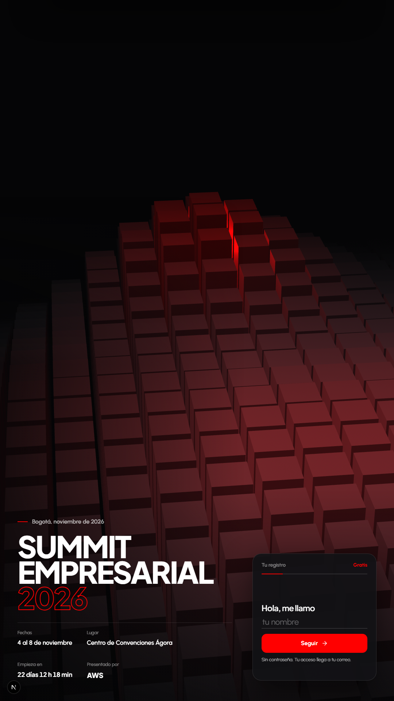

Pantalla de 1080 por 1920 (monitor vertical o tótem) y iPad Pro vertical. Hoy el hero ocupa toda la altura y el contenido queda pegado abajo. Solo cambia en pantallas verticales de más de 1020 de ancho; celular, iPad horizontal y escritorio quedan igual.
1080 × 1920

HoyCasi tres cuartos de la pantalla son fondo vacío.A2. Hero corto con los bloques llenándolo (ya aplicada)La escena se dibuja al alto del hero: encuadra como en una pantalla ancha.A. Hero más cortoEl hero mide como una pantalla ancha y los speakers suben. Pierde el fondo de bloques: habría que encuadrar la escena al alto del hero.B. Una columna abajoTítulo más grande a todo el ancho, datos en una fila y boleto debajo. Sigue anclado abajo, pero llena la mitad inferior.C. CentradoTodo al centro de la pantalla, boleto centrado. Los bloques quedan arriba y abajo como marco.